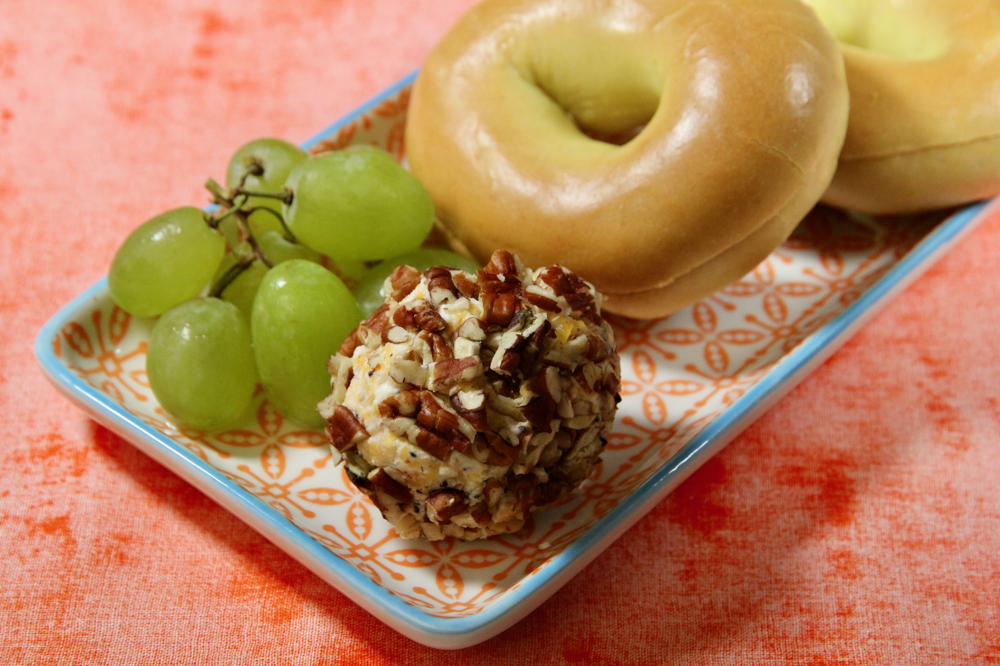

Everything Bagel Cheese Ball

Description
Cheese ball with everything bagel seasoning. A super simple and delicious recipe.
Ingredients
- 1 (8 ounce) package cream cheese, at room temperature
- 2 tablespoons everything bagel seasoning
- 1 cup finely shredded sharp Cheddar cheese
- 1/2 cup chopped pecans
Steps
- Mix cream cheese and bagel seasoning together. Add Cheddar cheese and mix thoroughly. Shape mixture into a ball with your hands or a spoon.
- Roll the cheese ball in chopped pecans until completely coated. Cover and refrigerate for 1 hour before serving.